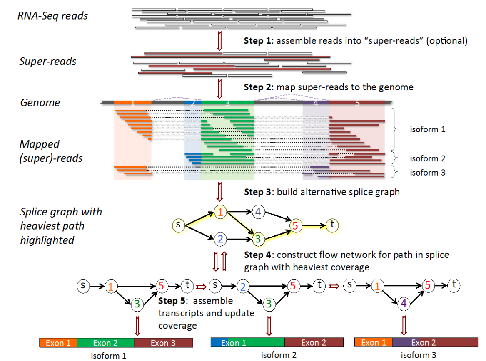
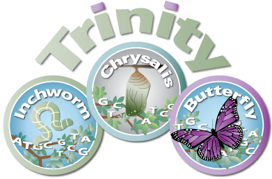
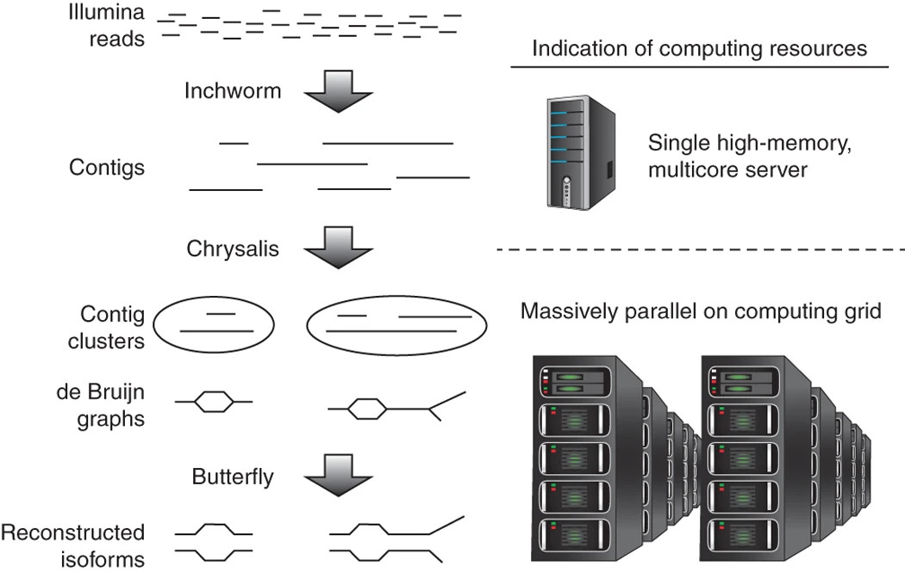
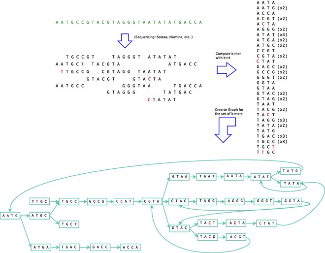
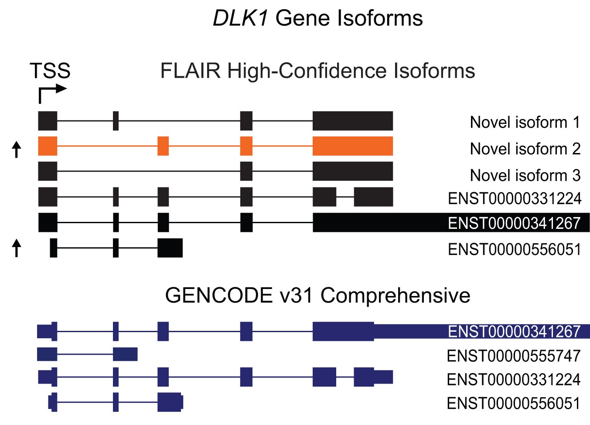
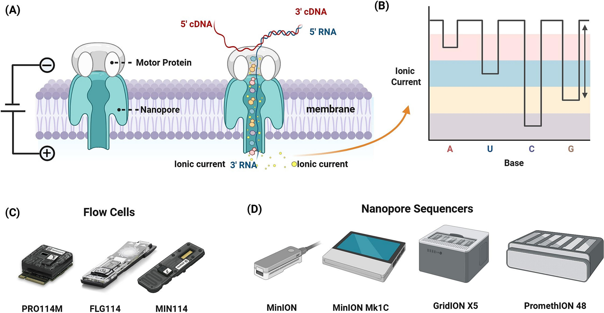
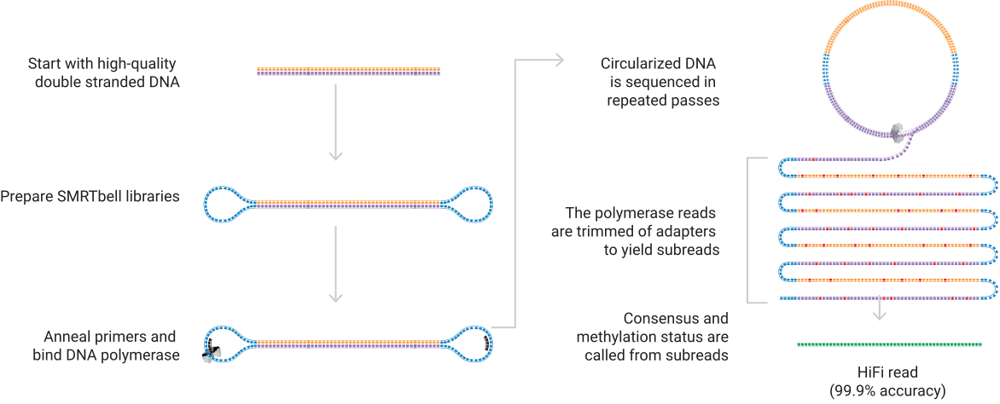

I’d like to acknowledge the Kaurna people as the traditional owners and custodians of the land we know today as the Adelaide Plains, where I live & work.
I also acknowledge the deep feelings of attachment and relationship of the Kaurna people to their place.
I pay my respects to the cultural authority of Aboriginal and Torres Strait Islander peoples from other areas of Australia, and pay my respects to Elders past, present and emerging, and acknowledge any Aboriginal Australians who may be with us today

featureCounts etc


>TRINITY_DN1000_c115_g5_i1 len=247 path=[31015:0-148 23018:149-246]
AATCTTTTTTGGTATTGGCAGTACTGTGCTCTGGGTAGTGATTAGGGCAAAAGAAGACAC
ACAATAAAGAACCAGGTGTTAGACGTCAGCAAGTCAAGGCCTTGGTTCTCAGCAGACAGA
AGACAGCCCTTCTCAATCCTCATCCCTTCCCTGAACAGACATGTCTTCTGCAAGCTTCTC
CAAGTCAGTTGTTCACAGGAACATCATCAGAATAAATTTGAAATTATGATTAGTATCTGA
TAAAGCATRINITY_DN1000_c115; Gene g5; Isoform i1
Image from Gleeson et al. (2021). Isoforms observed in SH-5Y5Y cells

